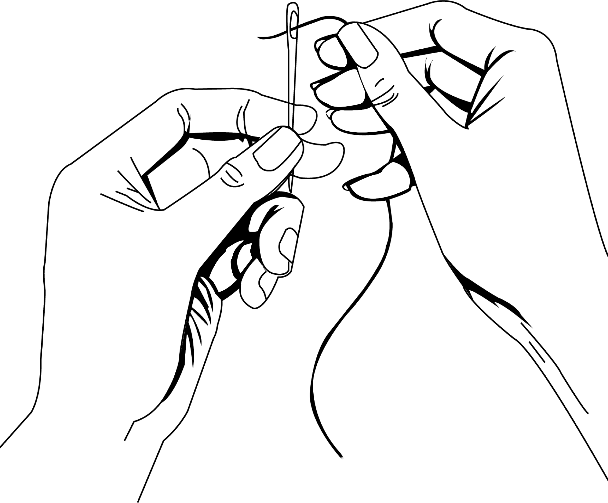

WELCOME TO THE SOCIAL SEWING INITIATIVE
We want to make a movement towards environmentally friendly and socially better fashion production practices. We're upcycling fashion brands' textile waste into new fashion pieces and employing people who have fewer chances in the labor market.
What we offer
We sew.
The service is offered to the fashion brands who wish to produce locally in Copenhagen. We work with clients whose source of fabric is textile waste, recycled or up-cycled materials.
Find out more
We repair.
We offer the repair service to increase clothes’ quality and longevity. As a brand you can use this service for items which you are unable to sell due to low quality or faulty finish.
Find out more
We re-design.
We can help you find new creative design solutions for your dead stock, unsold collections or other sources of textile waste your brand has accumulated.
Find out more
Our values
Local
We offer a local solution to the clothing production in order for brands to have control over their supply chain, proximity to the production and certainty of decent working conditions and wages.
Circular
The use-and-throw-away culture is not sustainable. It clogs landfills, obliterates the environment and spews greenhouse gases into the atmosphere. Therefore, the European Union’s upcoming legislation, the Waste Framework Directive, aims to protect environmental and human health by preventing and reducing waste. Through after_flow creation’s circular economy business model and services, we aim to put the Danish fashion industry at the forefront when it comes to establishing a climate-positive sector.
Inclusive
Very little is said about the people who spend hours making our clothes. After_flow creation wants to change that. We want to give them names and faces, and celebrate their skills and creativity. Moreover, we believe that every fashion brand must commit to the principles of human rights such as safe working conditions and fair wages. At after_flow creation, this is the very basic all our seamstresses, tailors and designers are guaranteed.